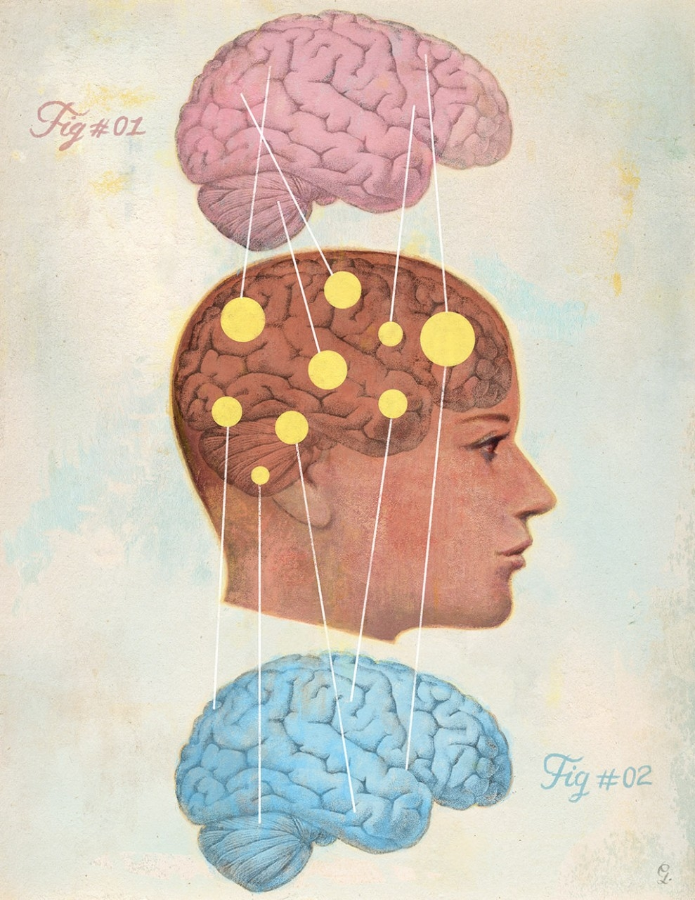

Wir alle sind bereits Stereotypen begegnet. Tatsächlich sind unsere Persönlichkeiten, stil, und vor Kultur sehr von ihnen beinflusst. Und eine Art von Stereotypen sind in ausnahmslos jeder Gesellschaft vorzufinden aufgrund der tatsache dass die Grundvoraussetzung bereits länger existiert als der Homo sapiens selbst. Ich rede natürlich über Stereotypen und Vorurteil basierend auf dem Geschlecht einer Person.
Frauen sind Kompliziert, Männer Stumpf und grob
Häufiger grund für Frustation im austausch zwischen Geschlechtern ist dass für Männer Frauen häufig sensibel, irrational und wechselhaft vor, Frauen währenddessen fühlen sich häufig missverstanden und als würden sie mit einer Wand reden. Der Grund hierfür ist Tatsächlich biologisch leicht zu erklären. Bei beiden Geschlechtern liegen verschiedene teile des Gehirns in verschiedenen Proportionen vor. In diesem Fall ist besonders wichtig zu wissen das während der Fokus des Weiblichen gehirns auf Sprach und sozialen sachen sowie strikter Planung liegt liegt der des Männlichen eher auf der Fähigkeit sich spontant anzupassen, schnell zu reagieren, und illogische oder stressige situationen zu bewältigen. Dies kann man gut sehen daran dass Tendenziell Mädchen es in Fächern wie Deutshc besser haben während Jungs in Logischen Fächern wie Mathe einen klaren vorteil haben. Da die moderne Welt allerdings eher auf das erstere fokusiert ist haben in sozialen situationen(z.b. In der Schule) Frauen einen objektiven Biologischen vorteil. Dazu kommt noch dass vor allem in jüngeren jahren kinder eine tendenz haben hauptsächlich mit gleichgeschlechtrigen zeit zu verbringen weshalb sie häufig in einer Situation in welcher zwischengeschlechtliche kommunikation nötig ist probleme haben da Frauen und Mädchen auf einer deutlich feineren sozialen wellenlänge agieren. Der Hauptkonfliktherd ist hierbei dass aufgrund kulturellen norms weibliche Menschen häufig nicht direkt sagen was sie wollen sondern es in Anspielungen verstecken welche allerdings teilweise so Fabriziert sind dass sie für ein anderes Mädchen offensichtlich wären aber einem Jungen direkt am kopf vorbeifliegt. Dies führt dann zu Konflikt da die Frau ihre Interessen und Wünsche nicht mitteilen können weshalb sie sich missachtet fühlen können woraufhin sie wiederum aggressiv oder emotional gegenüber den Männern werden welche nicht den grund für diesen plötzlichen emotionalen umschwung erkennen. Dies führt bei beiden Seiten zu frustration. Da dies ein weitverbreitetes verhaltensmuster ist kann es gut sein dass es leuten so vorkommt als wären alle Menschen des anderen Geschlechts so(Was biologisch auch so ist mit ausnahme von autisten und anderen geistigen störungen sowie Jungs mit niedrigem Testosteronspiegel). Von hier aus müssen sich die Leute nur mit ihren gleichgeschlechtlichen Kameraden darüber unterhalten und schon ist ein Stereotyp geboren.
Mädchen sind fleissig und Jungs sind faul
Die ist ein etwas Schulspezifischerer Stereotyp allerdings ist dies eine Schülerzeitung also ist es relativ relevant und vielleicht vor allem für die Lehrerschaft wichtig zu lesen. Vielleicht ist euch schonmal aufgefallen das Mädchen tendenziell bessere Mündliche und schriftliche Noten haben. Dies hat verschiedene Gründe. Bei mündlichen Noten ist es sowie dass Kulturell Mädchen wahrscheinlich eher erzogen werden still und brav zu sein, ein anderer und heutzutage deutlich prävelanterer grund ist das vorurteil das es so ist. In den Köpfen der Lehrer, und nicht nur die auf der Älteren seite( Herr Zoller ist zum Beispiel meiner Meinung nach der fairste Lehrer and der Schule in diesem aspekt) sonder auch oder vielleicht sogar besonders auf der Jüngeren. Dies ist ein Gutes beispiel dafür wie Stereotypen uns im Alltag beinflussen. In einer Studie die durchgeführt wurde (Hamburg LAU-Studie 1996/97) wurde entdeckt das Lehrer Mädchen mit gleichen Leistungen tendenziell besser bewerteten als Jungen. Hinzukommend ist unser Gehirn im Prinzip nichts als eine Mustererkennungsmaschine. Deshalb sind Stereotypen auch so allgegenwärtig weil wir immer nach bestätigung für unsere glauben suchen und andere informationen ignorieren/schnell vergessen. In der Praxis heisst dies dass ein Lehrer tendenziell bei Jungs eher nach schlechtem verhalten sucht und bei Mädchen nach bravem. Sagen wir Tim meldet sich 3 mal und redet 2 mal mit seinem nachbarn und Lara meldet sich auch dreimal und redet auch zweimal mit ihrem nachbarn. In diesem fall ist es wahrscheinlich dass der Lehrer ihnen im unterricht beiden sagt dass sie aufhören sollen zu reden allerdings jeweils nur der Teil welcher existierende gedanken unterstützt ins langzeitgedächtnis übergeht. Wenn der lehrer nun die nächste mündliche Note macht erinnert er sich daran dass Mit zweimal mit sienen Nachbarn geredet hat und Lara sich dreimal gemeldet hat.
Männer sind aggressiv/dominant Frauen sind passiv/fürsorglich
Dieser Stereotyp ist zwar etwas breiter gefasst, hängt aber eng mit dem vorherigen zusammen. Die biologische Erklärung dafür ist relativ einfach: Männer haben mehr Testosteron. Ein erhöhter Testosteronspiegel kann mit einer gesteigerten Neigung zu aggressivem oder wettbewerbsorientiertem Verhalten verbunden sein. Diese Effekte treten besonders im Kontext von Konkurrenz oder bedrohlichen Situationen auf und betreffen vor allem das prämotorische Cortex-System sowie die Amygdala, die Emotionen und Verhaltensreaktionen steuern. Bei Frauen ist dagegen der Anteil an Oxytocin (dem sogenannten Bindungshormon) deutlich höher, was die sozialen Bindungen stärkt und das Zugehörigkeitsgefühl fördert. Dies führt zu unterschiedlichen Reaktionen bei Stress: In einer stressigen Situation ist es wahrscheinlicher, dass ein Mann in den „Fight-or-Flight“-Modus geht und sich aggressiv verhält, während eine Frau in nicht akut lebensbedrohlichen Situationen (die heutzutage die Mehrzahl darstellen) eher in den weniger bekannten „Tend-and-Befriend“-Modus übergeht, bei dem sie versucht, sich stärker in eine Gruppe zu integrieren. Diese Verhaltensweisen haben ihre evolutionären Wurzeln: Frauen, die weniger Muskeln, geringere Ausdauer und langsamere Reaktionszeiten hatten, konnten nur in Gruppen gegen Gefahren überleben. Männer hingegen, die vor Gefahren und vorallem Konkurrenz zurückwichen, hatten weniger reproduktiven Erfolg. So haben sich durch biologische und später auch kulturelle Evolution diese Verhaltensmuster durchgesetzt und bleiben bis heute bestehen, auch wenn der „Fight-or-Flight“-Modus in modernen, sicheren Gesellschaften oft hinderlich ist. Dies lässt sich auch beobachten, wenn man Männer aus wohlhabenden, sicheren Ländern wie Deutschland mit denen aus ärmeren Regionen wie der Ukraine vergleicht in welchen dieses Aggressive Verhaltensmuster noch Prävelenter ist während die Deutschen eher Domestiziert sind.
Autor: Patrick von Guaita

Bild von Gérard DuBois